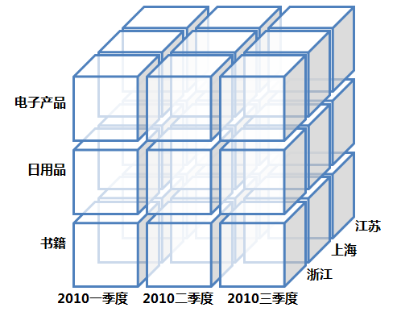
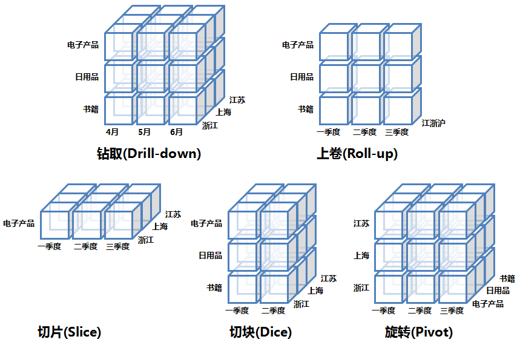
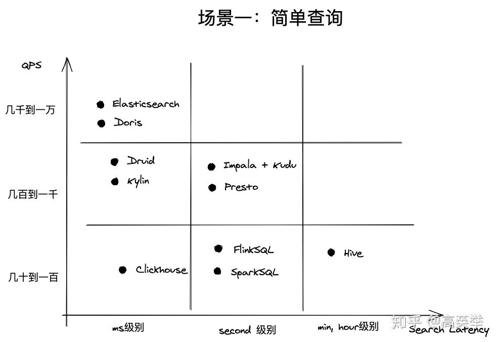
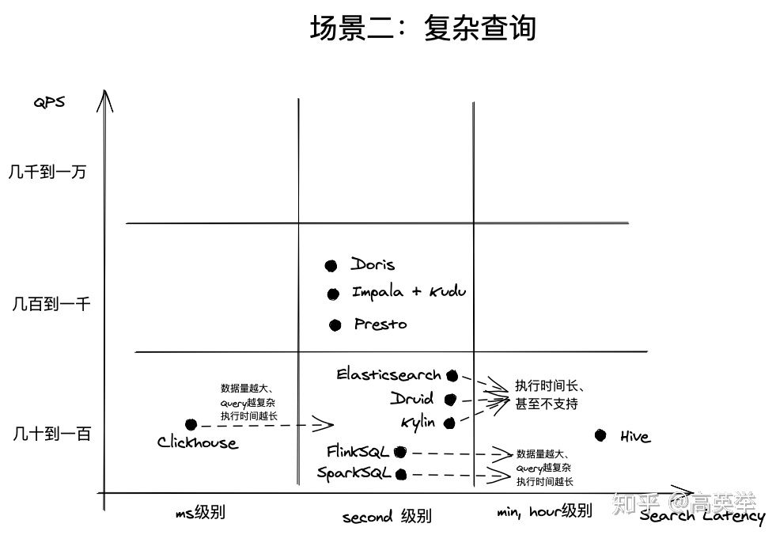

我对olap的初印象
OLTP和OLAP
概念
联机事务处理OLTP主要是执行基本的、日常的事务处理，比如数据库记录的增、删、改、查。比如在银行存取一笔款，就是一个事务交易。通常存在此类系统中的数据都是以实体对象模型来存储数据，并满足3NF(数据库第三范式)。
OLTP的特点一般有：
- 实时性要求高；
- 数据量不是很大；
- 交易一般是确定的，是对确定性的数据进行存取；
- 并发性要求高并且严格的要求事务的完整,安全性。
联机分析处理OLAP（On-Line Analytical Processing）是数据仓库系统的主要应用，支持复杂的分析操作，侧重决策支持，并且提供直观易懂的查询结果。典型的应用就是复杂的动态的报表系统。其特点是查询频率较OLTP系统更低，但通常会涉及到非常复杂的聚合计算。 OLAP系统其主要存储描述性的数据并且在结构上都是同质的。对于OLAP，列存储模式比通常的行存储模式可能更具优势。
OLAP的特点一般有：
- 实时性要求不是很高；
- 数据量大，因为OLAP支持的是动态查询，所以用户也许要通过将很多数据的统计后才能得到想要知道的信息，例如时间序列分析等等，所以处理的数据量很大;
- 因为重点在于决策支持，所以查询一般是动态的，也就是说允许用户随时提出查询的要求。所以在OLAP中通过一个重要概念“维”来搭建一个动态查询的平台（或技术），供用户自己去决定需要知道什么信息。
以下是大致的区分：
| OLTP | OLAP | |
|---|---|---|
| 用户 | 操作人员、低层管理人员 | 决策人员，高级管理人员（在互联网企业用户会更加灵活） |
| 功能 | 日常操作处理（增删改查） | 分析决策（多维聚合分析） |
| 设计 | 面向应用（App） | 面向主题（用户行为轨迹、用户画像） |
| 数据 | 当前的、最新的、细节的、二维的 | 历史的、聚集的、多维的、集成的 |
| 存取 | 读/写数十条记录 | 写多读少，百万级以上 |
| 工作单位 | 简单的读写 | 复杂查询 |
| DB大小 | 0-100G | TB-PB级别 |
| 事务 | ACID | 无事务要求 |
OLAP基础内容
OLAP几种操作：
- 上卷（Roll Up）/聚合：根据某些维度字段来聚合事实数据。以SQL类比：SELECT COUNT(hit_num) FROM zeus_result GROUP BY scene_id
- 下钻（Drill Down）：与上卷相反，选取某些维度拆解成更小的维度（年拆月，省份拆解城市）
- 切片、切块（Slicing、Dicing）：选定某些维度，并根据特定值来过滤这些维度值，将原来的大Cube切成小Cude
- 旋转（Pivot）：维度位置互换


OLAP分类
- 多维OLAP（Multi-dimensional OLAP）
- 关系型OLAP（Relational OLAP）
- 混合OLAP（Hybrid OLAP）
多维OLAP
典型代表是：Druid，Kylin
MOLAP一般会根据用户定义的数据维度、指标在数据写入时生成预聚合数据；Query查询到来时，实际上查询的是预聚合的数据而不是原始明细数据，在查询模式相对固定的场景中，这种优化提速很明显
但是这样的预聚合处理，需要预先定义维度，会限制后期数据查询的灵活性；如果查询工作涉及新的指标，需要重新增加预处理流程，损失了灵活度，存储成本也很高；同时，这种方式不支持明细数据的查询，仅适用于聚合型查询（如：sum，avg，count）
因此，MOLAP 适用于查询场景相对固定并且对查询性能要求非常高的场景。如广告主经常使用的广告投放报表分析
关系型OLAP
典型代表是：Clickhouse，Doris，Presto，Elasticsearch，Hive，Flink SQL，Impala，GreenPlum，Spark SQL
数据写入时，ROLAP并未使用像MOLAP那样的预聚合技术；ROLAP收到Query请求时，会先解析Query，生成执行计划，扫描数据，执行关系型算子，在原始数据上做过滤(Where)、聚合(Sum, Avg, Count)、关联(Join)，分组（Group By)、排序（Order By）等，最后将结算结果返回给用户，整个过程都是即时计算，没有预先聚合好的数据可供优化查询速度，纯拼资源和算力的大小
ROLAP不需要进行数据预处理，因此查询灵活，可扩展性好。
但是当数据量较大或query较为复杂时，查询性能也无法像MOLAP那样稳定。所有计算都是即时触发，没有预处理 ，因此会耗费更多的计算资源，带来潜在的重复计算
因此，ROLAP适用于对查询模式不固定、查询灵活性要求高的场景。如数据分析师常用的数据分析类产品，他们往往会对数据做各种预先不能确定的分析，所以需要更高的查询灵活性
混合OLAP
混合OLAP，是MOLAP和ROLAP的一种融合。当查询聚合性数据的时候，使用MOLAP技术；当查询明细数据时，使用ROLAP技术。在给定使用场景的前提下，以达到查询性能的最优化
OLAP设计理念：在数据量 VS 性能 VS 灵活性三者之间做权衡
OLAP引擎对比
从查询延迟和吞吐两个指标上对比在不同查询场景下各种OLAP引擎的性能情况
场景一：简单查询（点查、简单聚合查询、数据查询能够命中索引）
这样的查询经常出现在提供在线数据服务的企业应用中，如阿里生意参谋、腾讯的广点通、京东的广告业务等，它们共同的特点是对外服务、面向B端商业客户；并发查询量大；对响应时间要求高，一般是ms级别
下图的比较结果表示适合这类场景的是Elasticsearch, Doris, Druid, Kylin

场景二：复杂查询（复杂聚合查询、大批量Scan，复杂JOIN查询）
